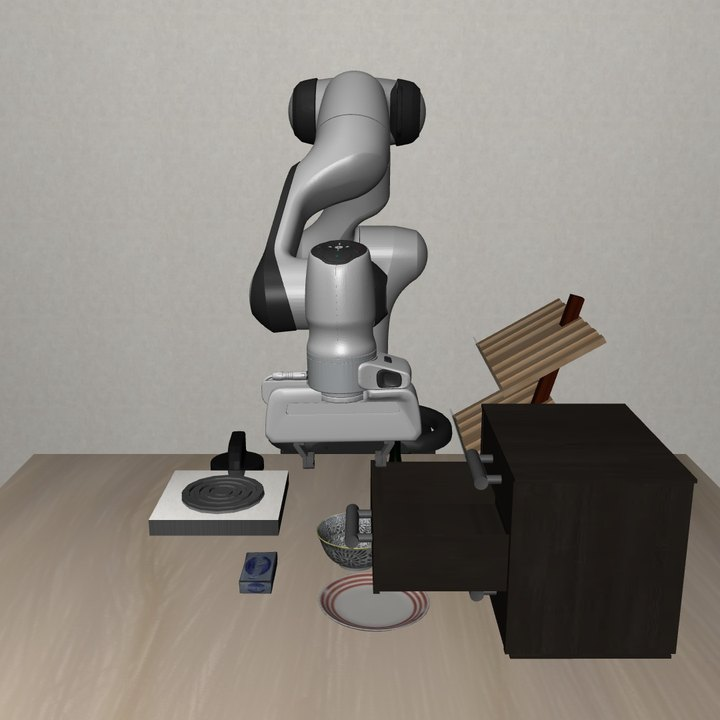
1 · Body Reset (Home)Chaining frozen Vision-Language-Action (VLA) skills under a high-level planner avoids collecting end-to-end demonstrations for every task combination. Yet strong single-step skills (98.0% solo) still fail at handoffs—even when the plan is right. Through controlled causal interventions on 640 matched handoffs, we isolate why: re-homing fixes arm pose shift (+68.6 pts), but the frozen arm still retraces its habitual path and hits objects left behind by earlier steps, even when those objects are hidden from the camera.
We turn that rigidity into an advantage with the 3D Skill Envelope: the 3D volume a frozen skill sweeps during its own
solo successful rollouts. From this measured volume, we build two 3D tools—CHECK flags blocking obstacles before a skill
runs, and FREE finds a clear spot outside future skills' paths—so
VLAs handle in-distribution execution and code clears out-of-distribution seams. Across LIBERO-Goal
(π0.5) and BOSS-44 (BC-ViT-T), Skill Envelopes beat frontier VLMs on seam prediction (0.902 vs. 0.793
AUROC), raise autonomous LLM chaining from 84.0% to 91.4% on LIBERO and 25.7% to 60.0% on BOSS-44, and
run 5.60× faster with live single-view RGB-D gating.
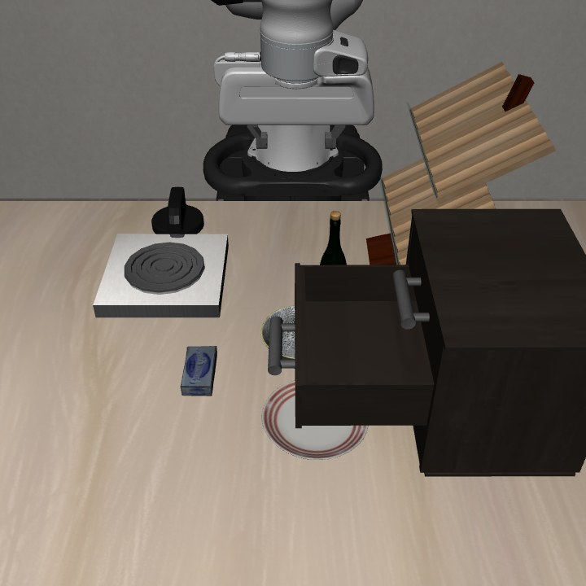
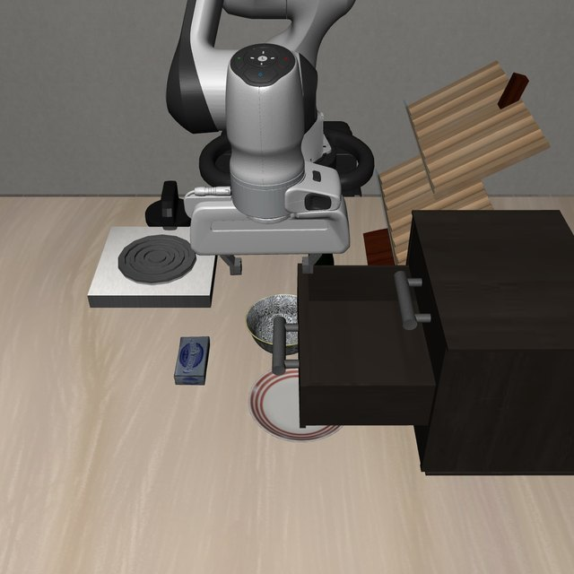
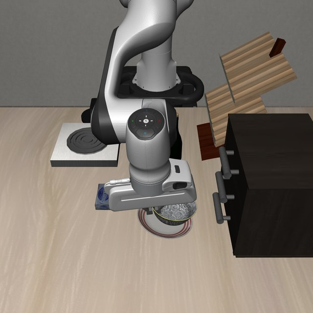
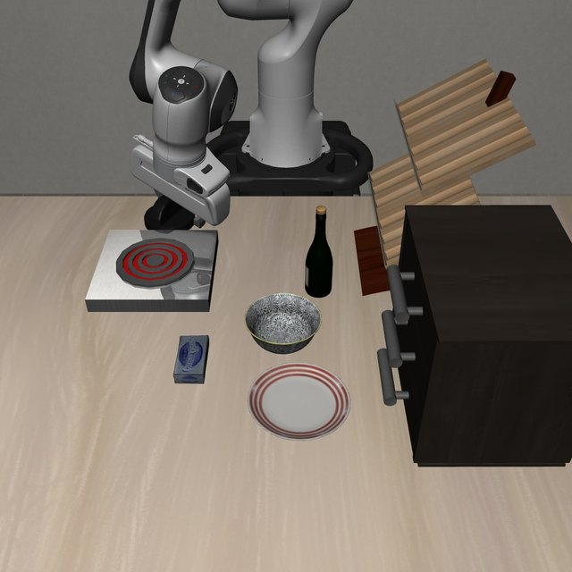
Part I · Causal Diagnosis
Done ≠ Ready: Seam Failures Are Physical Collisions
Across 640 matched handoffs (64 ordered LIBERO-Goal pairs × 10 states) on frozen π0.5, skills succeed at 98.0% solo but drop to 14.2% when chained directly. Re-homing recovers pose shift (82.8%), leaving a 15.2-point gap. Three matched interventions isolate why.
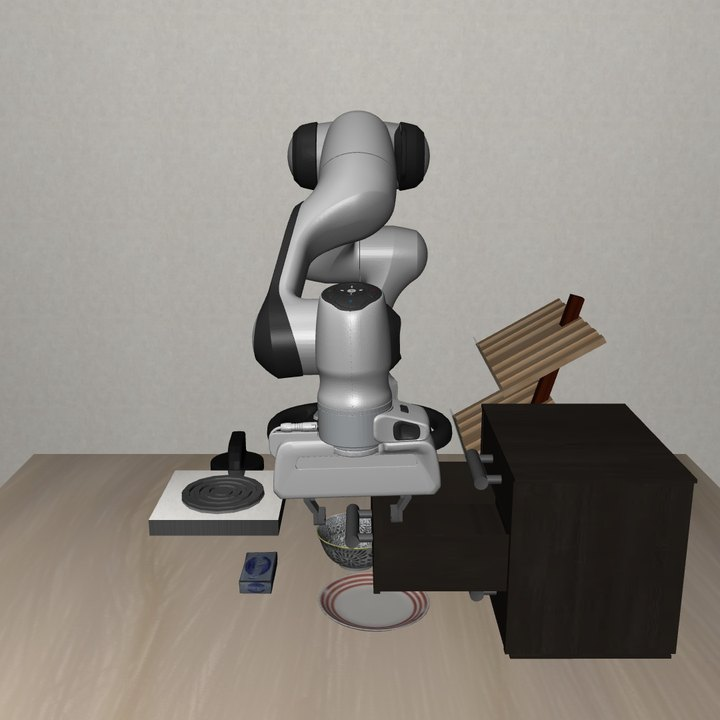
2 · View Reset (Hide Pixels)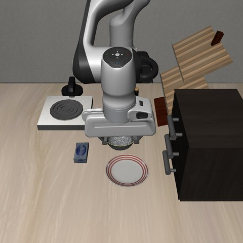
Policy Sees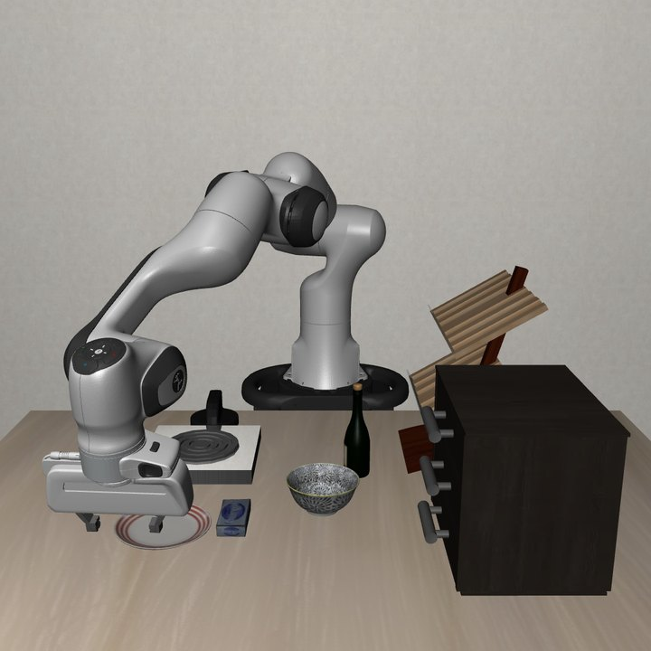
3 · World Reset (Physics)Controlled Causal Decomposition (640 Matched Handoffs)
Re-homed skills succeed 93.7% when they avoid leftover objects (n=526), versus 32.5% when they touch them (n=114).
Same Open Middle Drawer → 9 Next Skills
The exact same open drawer breaks 5 skills (0–4/10) while leaving 3 skills unaffected (9–10/10).
Push Plate · 0/10 (418 cm³ overlap)
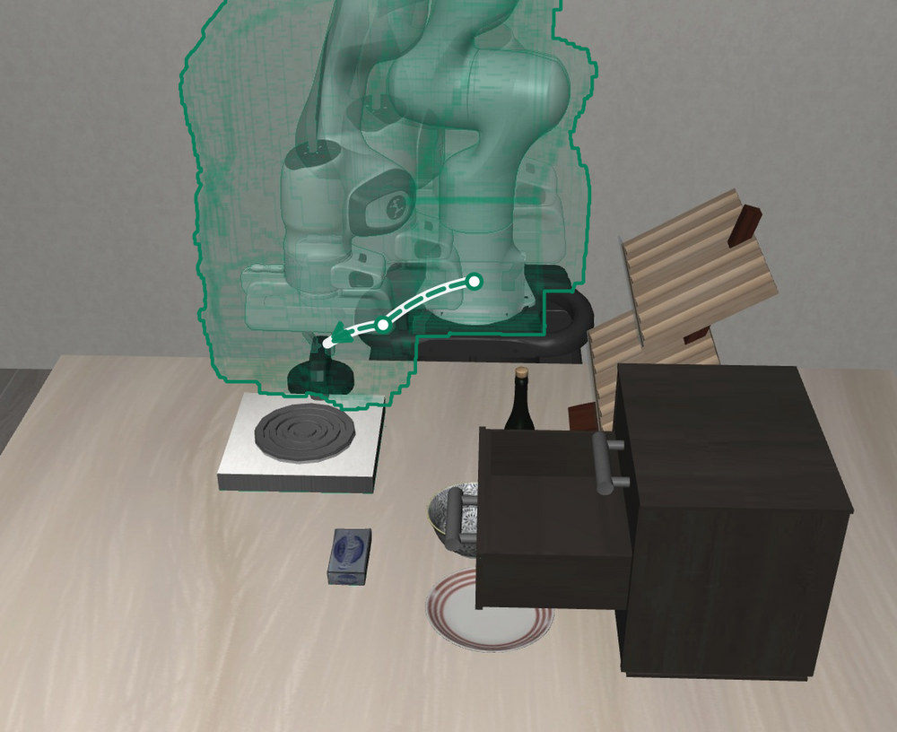
Turn on Stove · 10/10 (0 cm³ overlap)“A frozen VLA's rigid path is what makes it collide at seams—and what makes its 3D swept volume predictable before execution.”
Mechanism · Distribution Shift
Two Failure Modes: Start-State Drift and Mid-Path Obstacles
Direct chaining drops skill B outside its training start states ptrain(s0), causing compounding drift (14.2%). Re-homing puts the arm back at the start of its training tube, but leftover objects still block the path mid-rollout.
Part II · Method
3D Skill Envelopes: Profile Once, Gate Online, Clear with Code
Instead of finetuning policies or asking VLMs to guess unseen robot paths, we record each skill's 3D swept volume offline in
O(n) solo rollouts and query it online with CHECK and FREE.
Solo rollouts → 1 cm voxel occupancy map
O(n) Profiling & Single-View RGB‑D
For each frozen skill πk, we run N solo rollouts and project robot links, gripper, and held objects onto a 1 cm voxel grid via forward kinematics—no extra demonstrations or failure logs needed. Online, single-view depth differencing (>1 cm from the initial scene) with a 2 cm FK self-mask extracts displaced obstacles Vdepth without an object detector.
Eq. (1)
Eq. (2)
CHECK(k, s) · Collision Check & 0-Param Gating
FREE(K, s) · Safe Placement Search
5-Parameter Readiness Model (Eq. 3)
Online gating uses 0-parameter CHECK alone. When continuous scores are needed for step ordering or VLM comparison, a
5-parameter model multiplies pose readiness by per-obstacle collision survival:
Eq. (3)
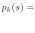
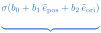
① Body Baseline (3 params: b0, b1, b2)
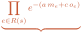
② Obstacle Survival Product (2 params: a, c > 0)
Try real handoffs:
pk(s) =
0.96
×
1.00
=
96%
0 cm³ overlap · e0 = 1 (zero penalty)
1 · Arm Alignment
Clear-path baseline
Depends only on re-homing error ; accurate homing keeps σ(·) near 1.
2 · Survival Product
Zero overlap = zero penalty
Non-overlapping objects (me = oe = 0) give e0 = 1; overlap drops survival exponentially.
3 · Zero-Drawer Transfer
Geometry, not object IDs
Fitting (a, c) on tabletop items alone transfers to unseen open drawers at 0.912 AUROC.
Part III · Simulation Rollouts
Side-by-Side Rollout Gallery
Unedited rollouts comparing baselines against 3D Skill Envelopes, FREE clearing, and code recovery on
LIBERO-Goal (π0.5) and BOSS-44 (BC-ViT-T).
BOSS-44 · BC-ViT-T
Hinged Microwave Door: Tool-Free vs. 3D Envelope Planning
Left: Tool-free agent opens the microwave first, gets blocked, retries, and knocks the bowl over at 954 steps. Right: 3D Skill Envelopes pick a conflict-free order and finish in 348 steps.
+34.3 pts (25.7% → 60.0%)
−38% steps
0/5 → 3/5 hinged door
LIBERO-Goal · FREE(K, s)
Tabletop Clearing: Re-homed Only vs. FREE Safe Push
Left: Re-homing leaves the plate inside π0.5's path, causing failure. Right: FREE picks a clear spot
outside Ek ∪ Ek+1, pushes the plate aside, and π0.5 succeeds.
Plate: 45% → 80%
All tabletop: 94.4% (n=71)
0.5× Slow-Mo · ~30-Line Code
Drawer Recovery: Code (98.6%) vs. Inverse VLA (0.4%)
Prompting frozen π0.5 with “close the drawer” works only 1/280 (0.4%). A 30-line geometric primitive closes it cleanly at 138/140 (98.6%).
98.6% vs. 0.4%
No VLA finetuning
BOSS-44 · Revolute Door Code
Hinged Microwave Door Recovery
A short two-stage revolute closing primitive clears swinging microwave doors whenever CHECK flags overlap with the next
BC-ViT-T skill.
Repairs −92.2% (51 → 4)
VLM calls −87.8% (49 → 6)
Part IV · Experiments
Quantitative Results (RQ1–RQ5)
Hover any bar or point for exact numbers. Across five questions, 3D Skill Envelopes match sim truth from one RGB-D camera, beat frontier VLMs, lift two LLM planners to the same ceiling, run 5.60× faster live, and transfer to a non-VLA policy.
Single-View RGB-D Matches Sim Truth (0.944) & Transfers Zero-Drawer
RQ1 · Detection & Transfer0-Parameter 3D Overlap Detection & 5-Parameter Cross-Category AUROC
140 / 140
Exact gating match between single-view RGB-D and sim state (426 ms)
0.944 vs 0.946
Detector-free RGB-D AUROC sits within 0.002 of sim truth
0.912 vs 0.681
Zero-drawer training transfers to open drawers; no-geometry drops to 0.499
Frontier VLMs Miss Seams Because They Cannot See 3D Arm Sweeps
RQ2(a) · vs. Frontier VLMs429 Test Handoffs: 3 VLMs × 3 Prompt Styles
Same Open Middle Drawer → 9 Next Skills (Qwen4-Max Over-Flags 7/7)
VLAs Fail at OOD Repair (0.4%); Code & FREE Recover Reliably
RQ2(b) · Code Recovery & FREEInverse VLA Prompting vs. Reactive Repair vs. Proactive Code Recovery & FREE Clearing
Two LLM Planners Reach 91.4%; Live RGB-D Gating Runs 5.60× Faster
RQ3 & RQ4 · Multi-Step & Latency128 Drawer-Bearing 3–4 Step LIBERO-Goal Chains
Live Single-View RGB-D Wall-Clock Breakdown (Matched n = 88)
656 / 656
Online RGB-D gating matches sim state on every step across live chains (93.8% success)
87.8% skipped
Clear seams bypass LLM/VLM straight to the VLA (0.0 VLM calls; 88/88 chains faster)
0 → 28 / 32
Two-drawer conflict chains jump from 0/32 to 28/32 with 0 redos (tool-free LLM: 27)
Beyond VLAs & Drawers: BOSS-44 (BC-ViT-T + Microwave) Gains +34.3 pts
RQ5 · Cross-Policy & BenchmarkBOSS-44 Held-Out Test Suite (35 Multi-Step Chains · Non-VLA BC-ViT-T)
Works Beyond VLAs and Drawers
Swapping π0.5 for an independent Transformer BC policy (BC-ViT-T) on a kitchen benchmark with hinged
microwave doors shows the same pattern. 3D Skill Envelopes lift completion from 25.7% (9/35) to
60.0% (21/35) (p = 0.0075), cutting repairs by 92.2%, VLM calls by 87.8%,
execution steps by 38.0%, and chain-end redos from 18 → 0.
Part V · Limitations & Next Steps
Open Questions
Three open questions remain for deploying policy-measured 3D preconditions at scale.
Q1 · REAL HARDWARE
Real-Robot RGB-D Loop
Run the single-view RGB-D loop on a dual-arm PiPER + Pika + RealSense cell to test depth noise, calibration drift, and physical contact.
Q2 · SCALE & CROSS-VLA
Dense Clutter & OpenVLA-OFT
Scale to 6–10 step cluttered scenes (BEHAVIOR-1K, BOSS CH3) to test free-space limits of ⋃j Ej and
cross-VLA specificity with OpenVLA-OFT.
Q3 · CODE SYNTHESIS
Envelope-Verified Recovery Code
Use CHECK and FREE to verify LLM-written recovery routines on unseen articulated or stacked obstacles and
save passing code.
Citation
BibTeX
If you use 3D Skill Envelopes in your work, please cite:
@article{zhang2026skillenvelope,
title={VLAs Execute, Code Recovers: 3D Skill Envelopes Bridge the Compositional Gap in Agentic Manipulation},
author={Zhang, Jiajie and Xiang, Yankai and Chen, Changhao},
journal={arXiv preprint arXiv:2611.32245},
year={2026}
}